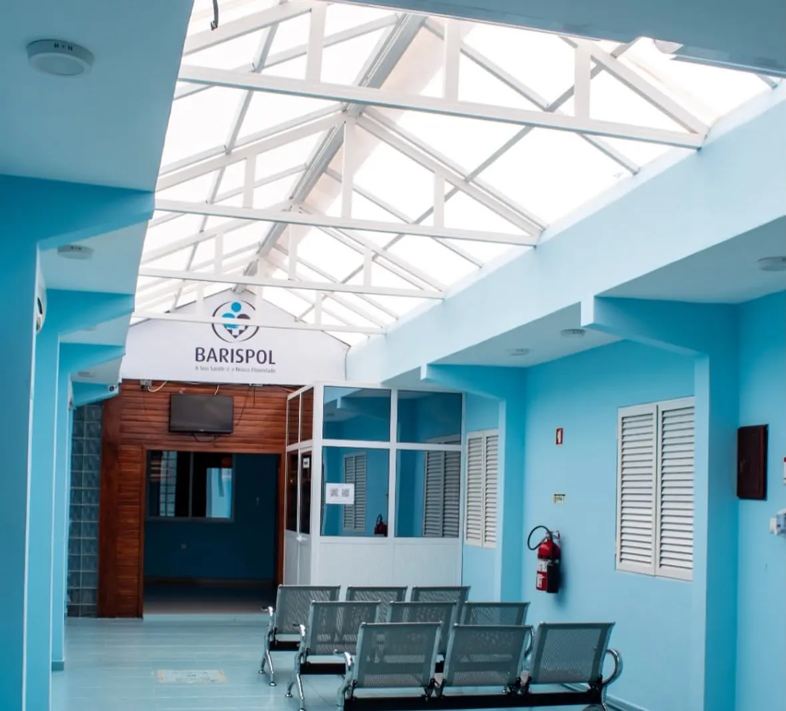
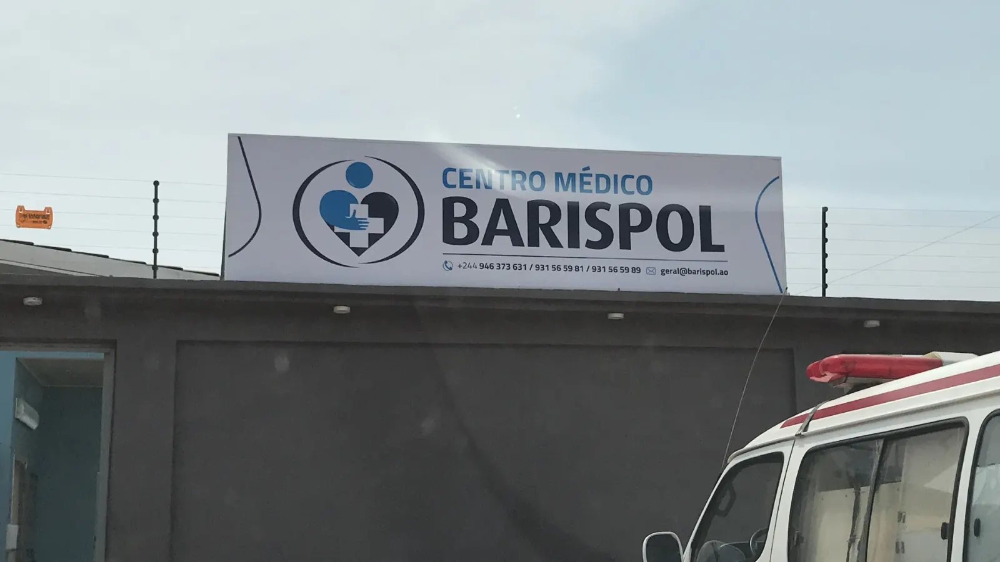

Camama, Luanda
Análises clínicas e consultas em Camama
Fazemos análises, consultas e exames de imagem no mesmo sítio. Abrimos todos os dias, das 07:30 às 22:00.
Marcar pelo WhatsApp
Análises clínicas
Colhemos e analisamos no nosso laboratório. A maioria dos resultados sai no mesmo dia.
Consultas
Clínica geral com marcação ou no próprio dia. A farmácia interna tem a medicação.
Campanhas
Campanhas em curso
Serviços
O que fazemos
Escolha o serviço e envie-nos uma mensagem. A recepção confirma a hora.
Análises clínicas
Laboratório próprio. Não precisa de marcação. A maioria dos resultados fica pronta no mesmo dia.
Clínica geral
Consulta marcada ou no próprio dia. Pedimos os exames certos e passamos a receita.
Pediatria
Primeira consulta, puericultura e consultas de rotina.
Ginecologia e obstetrícia
Consultas de rotina e acompanhamento da gravidez.
Ecografia
Ecografias obstétricas e gerais, com marcação prévia e leitura por imagiologista.
Raio-X
Com marcação prévia.
Outras especialidades
Cardiologia, cirurgia, ortopedia e urologia. Indicamos os dias de consulta de cada médico.
Enfermagem
Tratamentos e cuidados de enfermagem.
Farmácia interna
Levante a medicação prescrita logo a seguir à consulta.
Laboratório
Grupos de análises
Diga-nos o motivo e indicamos o grupo certo. Não precisa de marcação dentro do horário.
Análises da grávidaAcompanhamento pré-natal, do primeiro trimestre ao parto.
Hemograma completo, grupo sanguíneo e factor Rh, glicemia em jejum, urina II e urocultura, VDRL (sífilis), teste de HIV, hepatite B e C, toxoplasmose IgG e IgM, citomegalovírus, beta-HCG.
Pré-operatórioO conjunto que o cirurgião ou o anestesista costuma pedir.
Hemograma completo, tempo de coagulação, tempo de protrombina (TP e INR), grupo sanguíneo e factor Rh, glicemia em jejum, ureia e creatinina, TGO/AST e TGP/ALT, teste de HIV, hepatite B e C, raio-X do tórax.
Check-up geralUma vez por ano, para quem se sente bem.
Hemograma completo, glicemia em jejum, colesterol total, HDL e LDL, triglicéridos, ureia e creatinina, ácido úrico, TGO/AST e TGP/ALT, urina II, velocidade de sedimentação.
Febre e infecçãoPara febre, dores no corpo ou mal-estar sem causa aparente.
Gota espessa (pesquisa de plasmódio), teste rápido de malária, teste de dengue NS1, teste rápido de chikungunya, reacção de Widal (febre tifóide), proteína C reactiva, PCR (identificação de bactérias), hemograma completo.
Diabetes e controlo metabólicoPara quem já tem diagnóstico ou casos na família.
Glicemia em jejum, hemoglobina glicada (HbA1c), colesterol total, HDL e LDL, triglicéridos, creatinina, microalbuminúria, ácido úrico.
Saúde da mulherRotina ginecológica e queixas frequentes.
Exsudado vaginal, urocultura com antibiograma, hemograma completo, ferro e ferritina, TSH e T4 livre, beta-HCG, teste rápido de gravidez.
Saúde do homemA partir dos 40 anos, ou com queixas urinárias.
PSA total e PSA livre, espermograma, glicemia em jejum, colesterol total, HDL e LDL, ureia e creatinina, urina II.
Admissão e atestadoPara emprego, bolsa, viagem ou renovação de documentos.
Hemograma completo, análise de urina, exame de fezes, VDRL (sífilis), teste de HIV, hepatite B, glicemia em jejum, raio-X do tórax.
Procura uma análise que não está aqui? Fazemos muitas outras, como hormonas, marcadores tumorais e culturas com antibiograma. Pergunte-nos pelo WhatsApp.
Como funciona
Da marcação ao resultado
| Fase | O que fazemos | O que recebe |
|---|---|---|
| Marcação | Recebemos a sua mensagem com o nome, o serviço e a data. | A confirmação da hora, pelo WhatsApp ou por chamada. |
| Atendimento | Fazemos a colheita, a consulta ou o exame. | A receita e, se precisar, a medicação da farmácia interna. |
| Resultado | Validamos as análises no laboratório. | O resultado, na maioria dos casos no mesmo dia. |

A clínica
Em Camama desde 2016
Estamos no Bairro Bom Sossego, junto ao Hospital Materno Infantil Azancot de Menezes. Temos laboratório, consultórios, sala de observação, imagiologia e farmácia no mesmo edifício.
Seguros de saúde
Seguros e planos de saúde
Trabalhamos com estas seguradoras e planos de saúde. Se o seu não está na lista, escreva-nos. Confirmamos a cobertura antes da marcação.
- Aliança Seguros
- BIC Seguros
- ENSA Seguros
- Fidelidade Angola
- Fortaleza Seguros
- Giant Seguros
- Global Seguros
- Liberty & Trevo Seguros
- Medicare
- Mediplus
- Mundial Seguros
- Nossa Seguros
- Prefira Seguros
- Protteja Seguros
- Sanlam Angola
- Saúde Mais
- Sol Seguros
- STAS Seguros
- Super Seguros
- Tranquilidade
- Unisaúde
- Viva Seguros
A clínica
As nossas instalações
Precisa de análises ou de uma consulta?
Envie-nos o nome, o serviço e a data. A recepção confirma a hora.
Perguntas frequentes
Perguntas frequentes
Preciso de marcação para fazer análises?
Não. Pode vir directamente ao laboratório dentro do horário. A marcação pelo WhatsApp reduz a espera.
Quanto tempo demora o resultado?
A maioria das análises fica pronta no próprio dia. Quando um exame segue para um laboratório externo, indicamos o prazo no momento da colheita.
Qual é o horário?
Abrimos todos os dias, das 07:30 às 22:00. Também aos fins de semana e feriados.
As ecografias precisam de marcação?
Sim. Marcamos as ecografias com antecedência, pelo WhatsApp ou por telefone.
Têm farmácia no local?
Sim. A farmácia interna entrega a medicação prescrita logo a seguir à consulta.
Onde ficamos?
No Bairro Bom Sossego, Casa 186, em Camama, Luanda. Junto ao Hospital Materno Infantil Azancot de Menezes.
Contactos
Fale connosco
Morada
Centro Médico Barispol
Bairro Bom Sossego, Casa 186
Camama, Luanda
Angola
Horário
Todos os dias, das 07:30 às 22:00
Telefones
- Recepção e WhatsApp
- +244 946 373 631
- Chamadas
- +244 959 573 631
- geral@barispol.com
- @centromedico_barispol
Já esteve connosco? Responda ao inquérito de satisfação.